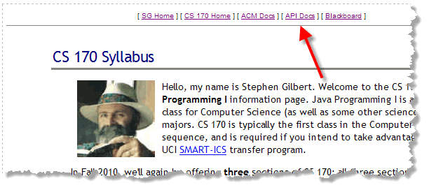
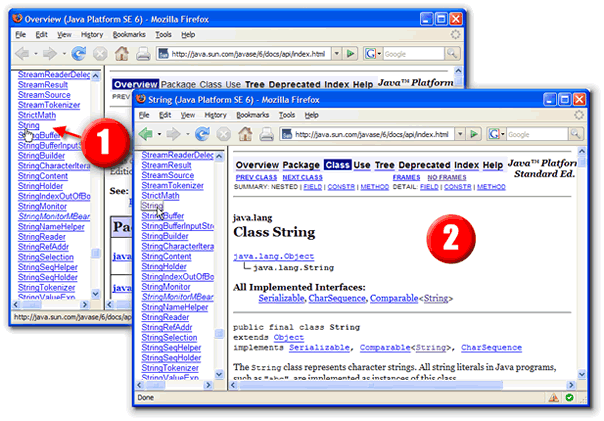
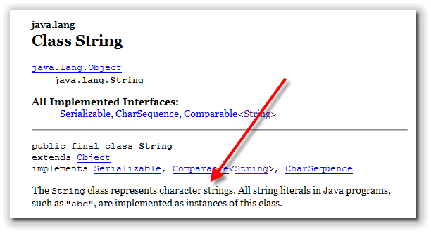
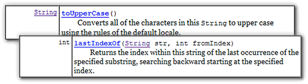
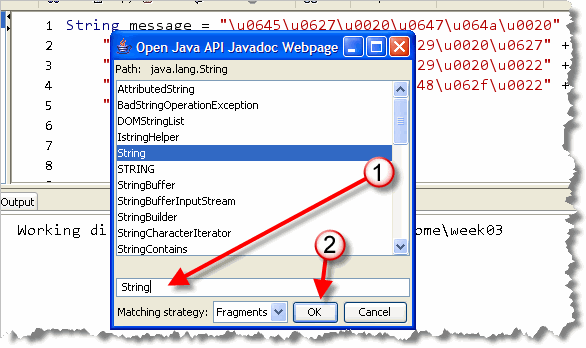
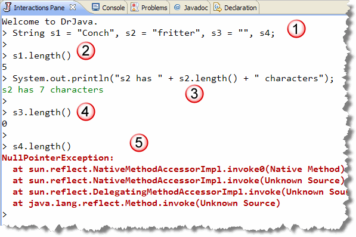
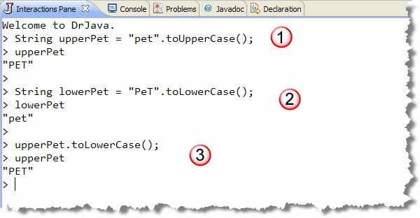
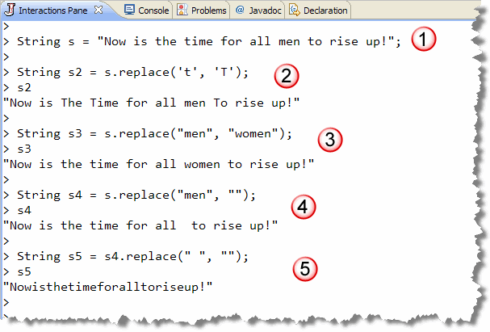

There's an old saying that you have
probably heard about a hundred times:
There's an old saying that you have
probably heard about a hundred times:
Give a man a fish and you feed him for a day. Teach a man to fish, and you feed him for his life.
Programming is a lot like that. Learning about
the Math and String classes is
not nearly as important as learning how to learn about
the Math and String classes.
In Java, you can learn about all the Java classes by using the online Java Documentation, often called the Javadocs after the program which generates the HTML help files from comments embedded in the Java source code.
To start this section, you'll learn how to get to the docs from the Web, how to search for the class you want to find, and how to interpret the documentation that you find there.
Locating the Documentation
To find the documentation for any of the Java classes, you can use your Web browser to access the online version at Oracle. The online docs are always available at:
http://download.oracle.com/javase/6/docs/api/index.html
Of course, sometimes it's hard to remember something like that,
(and sometimes, the link actually changes!), so
I've placed a link to the Java API docs on the class syllabus page.
You'll find the link in the upper-right corner; it should look
something like this.

Now, let's try to make some sense of the Javadocs themselves.
The Javadoc API Window
Once you open the API documentation in your Web browser,
you'll start at the main
Javadoc window, which you can see below. The
Javadoc interface consists of three frames:

- The Package Browser in the upper left-hand
corner allows you to select individual packages, so that only
the classes in that package appear inside the class browser window
below it. You can also click individual packages by selecting
the links in the center frame.
I usually close this frame by sliding the bottom bar up to the top, since I don't find it very useful to restrict my searching to a single package. When you first arrive, the package browser is set to display all classes.
- The Class Browser in the lower-left corner consists of hyperlinks to all of the classes and interfaces in the currently selected package. Since these are in alphabetical order, it's a simple matter to scroll down and find the class you want.
- The Content Pane in the center is where you'll find the documentation for the class you're interested in.
Let's look at the documentation for a class we've already met, the
String class.
Scroll through the class list (in the lower-left frame) until you
find the link, as shown here (1), and click it:

The class documentation is displayed in the right-hand (larger) frame (marked 2). Let's take a look at what you'll find there.The Contents Window
Finally, some meaningful information! The Javadoc for each class is broken up into several sections. Most of these won't make a lot of sense to you until you've learned a little more about Java. For right now, we're only concerned about three sections:
- Introduction and Class Summary
- Method Summary
- Method Details
Let's start with the introduction.
Introduction and Class Summary
At the very top of every class documentation page, there is an
introduction to help you get oriented. The introduction starts
with the class name (class String. in the picture)
and is followed by a visual "ladder" of inheritance.

This is important because some methods may be inherited from a "parent" or "super" class, so this gives you a place to start looking. Right above the class name is the name of the package
that contains the class; in the case of the String class,
that's the java.lang package. Remember that the java.lang
package is automatically imported into every Java program.
For most other classes, though, you'll use the package name you find here
when you write your import statements.
Right below the inheritance hierarchy, you'll normally find more introductory
information. In the picture, you'll see the very beginning of the introductory
section for the String class. For most classes you'll find:
- A simple explanation that tells you what the class does and, often more important, why it exists.
- A simple code example. For some of the more complex classes, the explanation is not enough; a code example is "worth its weight in gold", (to worry an old cliche).
- A picture of the component for the basic visual classes.
It never hurts to revisit this introductory material from time to time, especially when new versions of the SDK are released.
The Method Summary
Scroll down through the documentation until you come to the
section titled Method Summary as shown here:
 Methods, (you'll remember from our discussion of the
Methods, (you'll remember from our discussion of the System.out
object), correspond to the messages that an object responds to.
In that sense, they are similar to the functions you've been using.
The big difference, is that the methods in the String class
are each "attached" to a particular String object, and so
the code you use to call the method is slightly different than the
code you'd use to call a function.
The Java documentation provides the tools you'll need to make yourself
understood by any Java object. The "dictionary" of commands that any
given object understands is listed in its method summary. These are the
things that you can tell a String object to do or to calculate.
As you can see here, a String
object "knows how to do" more than sixty different things; that is, the
String class contains more than sixty methods.
In fact, the String
class also inherits eight methods from its parent class,
Object, so the actual number of things it can do
is closer to seventy.
Deciphering the Docs
Making sense of the Javadocs is one of the most important
things you can do at this point, so
scroll on down through the method summary and let's take a closer look
at two different String examples: the toUpperCase()
method and the lastIndexOf() method. When you've found them,
and let's get to decoding:

The left-hand column (1) shows the return type of the method.
If you see the word void here, then the method just
carries out an action, it doesn't calculate and return a value. If anything
else appears, the method is a function that calculates and returns
a value.
As you can see, the toUpperCase() method returns a new String,
while the lastIndexOf() method returns an int.
Ignore, for now, the words
abstract or static that appear
in many places in this column. These are advanced features
that we'll cover later in the semester.
The Signature
In the right-hand column, the lines that reads:
toUpperCase()
lastIndexOf(String str, int fromIndex)
is called the method signature. It consists of two parts: (2) the name of the method, and (3) the argument or parameter list.
In the computer science world, the words argument and parameter are often interchanged. Some textbooks use the term parameter, and some use the term argument. I've tried to be consistent and use parameter or both, but sometimes you'll see the word argument slip through alone.
If you're paying attention, you've probably noticed that the signature looks very much like the method header used when the method is defined. The method signature is important, because it tells you how to invoke or call the method, mostly by letting you know the kinds of additional information you need to supply.
Actual Parameters
In the parameter list, the type and name of each piece
of information is listed; each parameter is separated from its
neighbors by a comma.
As you can see in the picture, there are no parameters defined for
the toUpperCase() method, so you don't need to supply
any additional information when you call it. The lastIndexOf()
method, though, has two parameters defined.
The first is a String named str and the second
is an int named fromIndex.
That means that when you call the lastIndexOf() method,
inside of the parentheses you have to supply a String value,
(either a variable or text between double quotes), followed by an integer
value, (either a variable or a literal whole number like 17). You'll
separate the two values (which are called actual parameters), with a comma.
Just to recap:
- If you see a parameter with a type of
String, put "text between double quotes" in that position. - If you see a parameter with a type of
int, put a whole number in that position. - If you see a parameter with a type of
double, put a real number (that is, a number with a decimal point) in that position
The last portion of the method summary documentation is a simple, one-line explanation of the method's behavior. You can get a more complete explanation by clicking the name of the method.
Using the Documentation
To use the method, you simply follow the instructions found in
Chapters 1 and 2 when we discussed sending messages to the
System.out object. For each of the
arguments listed in the signature, replace it with a
value of that type.
Given the documentation of the two methods above,
here's how you'd use these two methods (along with the nextLine()
method in the Scanner class:
cout.println("Enter your name like this (Last, First MI.):";
String yourName = cin.nextLine();
String upperName = yourName.toUpperCase(); // No parameters
int lastSpace = yourName.lastIndexOf(" ", 0); // Start looking at character 0
Using the Java API Javadoc in DrJava
DrJava allows you to quickly open a Javadoc page for a specific
class by using the Open Java API Javadoc item in the
Tools menu. (You can also use the Shift+F6 hotkey, but
that doesn't seem very intuitive to me.) When you do that, you'll
see a dialog that looks like this:

Type the class you want to look up (1) and then click the OK button to open the specific class file in your Web browser. You can also use the Open Java API Javadoc for Word Under Cursor
feature, which you'll also find in the Tools menu. The hotkey for
this is Ctrl+Shift+F6. If I put my cursor on the word String
in the Definitions or Interaction pane, DrJava looks at the
word the cursor is on and uses it as a starting point for
the search. If there is a unique match, then DrJava will
open the Javadoc page immediately; otherwise the same dialog
box will open as before and you'll have to pick from the list.
Well, that's the Javadoc basics. Now let's use that knowledge to
look at some of the String methods you'll use most often.
Introducing String Functions
When you first met the String class, you
saw that Strings had some of the characteristics of
primitives and some characteristics of objects. One of the ways
in which Strings are like objects is that the
String class has a rich set of methods you can use
to manipulate String objects.
Implicit and Explicit Parameters
While some of these methods are static functions, like
the methods in the Math class, most of them are a little
different; they don't operate only on the explicit parameters passed
into the function, but operate instead in the context of the implicit
object that has been used to invoke the method. These kinds of functions
are called instance methods.
Let me give you an example. When you call the function Math.sqrt(2.0),
the explicit parameter value, 2.0 is supplied to the
function in a variable which is then used to perform the calculation. When
you call the String function s.length(), though,
there is no explicit parameter being passed, but implicitly
the String object named s is being passed as
an "invisible" first parameter. Inside the length() method,
this object is referred to as this.
Now, let's look at a just a few of these String
instance methods. I'll try to arrange things so you only
have to look at a few methods each week, so that you don't
get overwhelmed.
String Length
If a String is a sequence of 0 to n
characters, how do you find out what n is?
It's actually pretty easy; you just ask the String
object how long it is, by calling its length()
method.
You don't have to supply any parameters when you call the
length() method. As mentioned earlier, the
String object itself, used to call the method,
is passed as the implicit parameter. The returned value is an
int. Here are a couple examples:

- Line 1 creates four
Stringvariables,s1,s2,s3, ands4. The first three are initialized using literals. The last is uninitialized. - Line 2 sends the
length()message tos1and stores the "answer" in theintvariablelen1. After this line runs,len1will contain 5, because "Conch" contains 5 characters. In DrJava, we can evaluate the value in a variable, just by typing its name, and leaving off the semicolon, as I've done here. - Line 3 calls the
length()method using the variables2. This time, instead of storing the result in a variable, theintvalue 7 (the number of characters in "fritter") is converted to aStringand combined with several literals, using concatenation. Instead of saving the returned value, we just use it directly. - Line 4 calls the
length()method, using the variables3. TheString s2contains 0 characters; it's the empty string. While this line compiles and runs, it actually contains a logic error. Thelength()method returns a value, but in Line 4, we simply ignore that value, using it like a simple action-producing method. The line, effectively, does nothing. - Line 5 attempts to send the
length()message to theStringobject referenced by the variables4. In DrJava, this produces a runtime error. Sinces4was never intialized, though, Java won't compile your code, ifs1is a local variable in a regular Java program.
Builder Methods
Because Strings are immutable, the Java
String class has no mutator methods. In
place of these, however, there are a number of "builder"
methods that produce a new String by
transforming an existing String.
When you use any of these transforming builder methods, you have
to remember to save the results using a String
variable.
Here are some of the methods you'll use most often.
toUpperCase(), toLowerCase()
Returns the String on the left, (the one calling
the method), translated into either upper or lower case:

- The first example calls the
toUpperCasefunction, using theStringliteral "pet" as the implicit function parameter. The result is stored in theStringvariableupperPetand its value is displayed. - The second example calls the
toLowerCasefunction, using the mixed-caseStringliteral "PeT" as the implicit function parameter. The result is stored in theStringvariablelowerPetand its value is displayed. - Finally, the last example shows
a common logic error; the programmer thought the code was converting
upperPetto lowercase, but instead it creates a newStringobject and then simply abandons the new object altogether. The variableupperPetis not modified, as you can see when it is displayed.
replace(char a, char b), replace(String a, String b)
Returns a String with all occurrences of the
character of String a replaced by the
character or String b, not just the first
occurrence.
Here are a few examples:

- The first example stores an inspirational message in
a
Stringvariables. (You have nothing to lose but your chains!) - The second example uses the
charversion ofreplace()to capitalize all of the lower-case 't' characters with upper-case 'T' characters in an effort to flout convention. Notice that when you usereplace(), you must store the results into another (or the same) variable. Callingreplace()does not changesat all. - The third example uses the
Stringversion ofreplace()to update the phrase to the 20th, if not the 21st century. - Not to be outdone, the fourth example updates the sentiment
even further by removing the human-centric term altogether. From a
programming perspective, this shows you how to use the
Stringversion ofreplace()to remove a word. - The fifth and final example is both non-specist and non-spacist,
removing all of the time-consuming spaces that clogged up the previous
examples. Much more efficient, right? Again, from a programmer's perspective,
you need to remember that
replace()replaces all occurrences in aString, not just selective ones.
Note that prior to Java 5 there was no
replace method for String parameters.
Java 5 contains a version of replace() that works on
classes implementing the CharSequence interface,
which the String class does. The bottom line? You can
use replace with String arguments
in Java 5, but if you want your code to work in 1.4, use
replaceAll(). There is also a replaceFirst()
method.

Strings and Methods Summary
- Use the online Javadoc documentation to find out what messages that an object responds to.
- The first step is to locate the class you want. Use the class browser pane to look up the name alphabetically, or use DrJava's hot keys to look up the class for you.
- The class summary provides information you need for
your
importstatements, as well as a general explanation and examples. - The method summary provides an alphabetical list of all of the classes methods, including the return type and the types of all parameters.
- Use the method signature shown in the documentation to determine what kind of values to supply when calling the method.
- Instance methods, like those in the
Stringclass, operate on an implicit parameter as well as explicit parameters. The implicit parameter is the object used as the receiver when calling the method. - The
String length()function takes no (explicit) parameters. It returns the number of characters contained in its implicit parameter. - The builder methods,
toUpperCase()andtoLowerCase()return a newStringobject with each of the individual characters in the implicit parameter transformed appropriately. - The builder methods,
replace()andreplaceAll()employ both implicit and explicit parameters. Each copy of the first explicit parameter appearing in the implicitStringobject is replaced by the section explicit parameter. Once all of these replacements are made, the newStringis returned. - When using
replace(), using the emptyStringas the second parameter creates a newStringwith all occurrences of the first parameter deleted or removed.